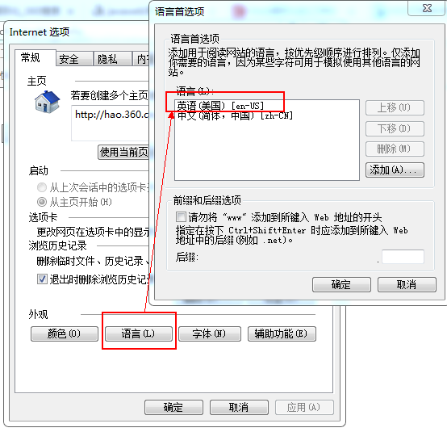
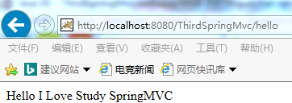
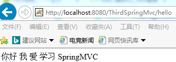

随着网络的发展，在Web开发中，系统的国际化需求已经变得非常的普遍。本文主要讲解SpringMVC框架对多语言的支持，仅供学习分享使用，如有不足之处，还请指正。
国际化(internationalization)又称为 i18n(读法为i 18 n，据说是因为internationalization(国际化)这个单词从i到n之间有18个英文字母，i18n的名字由此而来)，即能同时应对世界不同地区和国家的访问，并针对不同地区和国家的访问，提供相应的、符合来访者阅读习惯的页面或数据。
如下所示，国际化资源文件*.properties格式的文件，文件命名必须符合【base_语言_地区.properties】的命名规范，缺省为【base.properties】即，如果没有对应的语言的资源文件，则从默认文件中查找。
1 //默认文件
2 /ThirdSpringMvc/src/i18n.properties
3 //英文-美国
4 /ThirdSpringMvc/src/i18n_en_US.properties
5 //中文-中国
6 /ThirdSpringMvc/src/i18n_zh_CN.properties国际化资源文件内容是以键值对【key=value】的格式存储的，且如果是中文，则显示对应的Ascii码如下所示：
hi=\u4F60\u597D
me=\u6211
love=\u7231
study=\u5B66\u4E60
mvc=SpringMVC如下所示：基名为i18n是默认通用的命名方式。
备注：bean的id必须是messageSource，否则对应不上
1 <!-- 加载国际化资源文件 -->
2 <bean id="messageSource" class="org.springframework.context.support.ResourceBundleMessageSource">
3 <!--<property name="basename" value="i18n"></property>-->
4 <property name="basenames">
5 <list>
6 <value>i18n</value>
7 </list>
8 </property>
9 </bean>如下所示：通过<%@ taglib uri="http://java.sun.com/jsp/jstl/fmt" prefix="fmt" %>引入标签支持
<%@ page language="java" contentType="text/html; charset=UTF-8"
pageEncoding="UTF-8"%>
<%@ taglib uri="http://java.sun.com/jsp/jstl/fmt" prefix="fmt" %>
<!DOCTYPE html PUBLIC "-//W3C//DTD HTML 4.01 Transitional//EN" "http://www.w3.org/TR/html4/loose.dtd">
<html>
<head>
<meta http-equiv="Content-Type" content="text/html; charset=UTF-8">
<title>Insert title here</title>
</head>
<body>
<fmt:message key="hi"></fmt:message>
<fmt:message key="me"></fmt:message>
<fmt:message key="love"></fmt:message>
<fmt:message key="study"></fmt:message>
<fmt:message key="mvc"></fmt:message>
</body>
</html>在IE浏览器中设置如下：设置-->Internet选项-->语言-->打开语言选项，可以通过上移下移设置当前语言，如果没有，则可以添加语言。如下所示：当前为英文-美国（en-US）

则浏览器显示内容如下：

如设置成中文-中国（zh-CN）,则显示如下：

以上就是设置SpringMVC支持多语言的操作步骤。
葡萄美酒夜光杯，欲饮琵琶马上催。
醉卧沙场君莫笑，古来征战几人回？